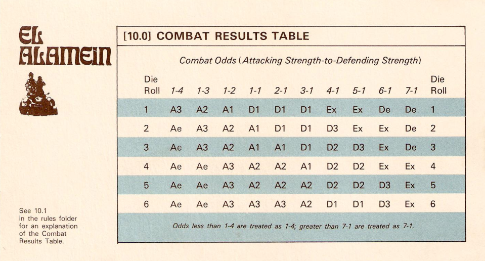

游戏、地图与单位
《El Alamein》模拟 1942 年北非阿拉曼战役，包含 7 月第一次阿拉曼、9 月阿拉姆哈勒法、10 月第二次阿拉曼三个场景。每个完整 Game-Turn 代表 24 小时，每个六角格代表约 5 公里。
通过消灭盟军战斗单位、造成孤立、推进到关键地域，或在 10 月场景撤出单位来累计胜利点。
通过阻止轴心国获得足够胜利点来获胜。雷区、控制区、补给线和防御地形是主要工具。
游戏使用地图、单位棋子、雷区/道路模式/补给状态标记、回合记录表、CRT、地形效果表、设置表和一枚六面骰。
单位类型
- 机械化单位包括装甲、侦察、装甲步兵。
- 非机械化单位包括步兵、滑翔机步兵、空降步兵、伞兵、工兵、防空单位。
- 非战斗单位主要是补给单位。
单位数值
- 战斗强度用于攻击和防御。
- 移动力表示一个移动阶段中最多可花费的移动点。
- 单位规模、类型、国籍和番号用于识别部队与适用规则。
专业术语速查
规则书里会反复使用一些兵棋术语，下面是对这些术语的解释：
地图上的一个格子。单位的位置、移动距离、相邻关系、控制区、补给线都按六角格计算。
完整的一天战斗流程。一个游戏回合通常包含双方各自的玩家回合，回合结束后回合标记前进。
某一方连续执行自己的阶段。当前正在执行玩家回合的一方就是当前玩家。
玩家回合里的具体步骤，例如初始移动、战斗、机械化移动、补给移动。很多动作只能在对应阶段执行。
正在执行自己玩家回合的一方。规则中“友军”通常指当前玩家一方，“敌军”指另一方。
单位在一个移动阶段中可花费的行动额度。进入地形、进入或离开堆叠、进入或退出道路模式都会消耗移动点。
单位用于攻击和防御的基本数值。补给、道路模式、地形、雷区和场景特殊规则可能会修改它。
通常是战斗单位周围相邻六角格，会限制敌方移动、撤退和补给线。
多个友军单位在同一个六角格内。堆叠有数量限制，进入或离开含友军单位的格子要额外支付移动点。
战斗结算用表。战斗时先算攻击力与防御力比值，再掷 1d6，在表上查出结果。
攻击方总战斗强度对防御方总战斗强度的比例，例如 2:1、1:2。比值总是向有利于防御方的方向取整。
骰子结果的加减修正。如果规则或表格要求，会在掷骰结果上加减数值。本游戏主要用 CRT 栏位和结果处理战斗。
用来判定胜负的分数。轴心国通过消灭、孤立、推进或撤出单位等方式获得 VP，最终用 VP 等级判定胜负。
单位能否从补给源追踪到有效补给线。补给状态会影响攻击、防御、移动，道路模式也要求单位有补给。
比无补给更严重的状态。孤立单位战斗和移动能力受限，持续孤立可能导致单位被消灭。
单位以道路行军队形移动。进入后剩余移动力可按道路模式放大，但战斗强度减半，且前后道路空间必须保持空置。
战斗结果要求单位后退指定格数。撤退不是普通移动，不消耗 MP；无法合法撤退时单位被消灭。
战斗清空敌方格子，或攻击方撤退、被消灭后，符合条件的一方可以选择让一个单位推进到空出的格子。
游戏顺序
每个游戏回合由两个玩家回合组成。场景规则指定哪一方先行动。每个玩家回合由四个阶段组成，正在执行阶段的一方称为当前玩家。
移动
当前玩家在移动阶段中可以移动任意数量己方单位，也可以不移动。单位必须逐格、逐单位移动；堆叠不能整体移动。单位一旦完成移动，不能重新走回或修改已宣布路线。
禁止与限制
- 单位永远不能进入包含敌方单位的六角格。
- 单位可以进入敌方控制区，但进入后必须停止。
- 单个单位不能自愿离开敌方控制区，除非该格还有另一个友军单位留守。
- 非机械化单位不能在机械化移动阶段移动。
- 只有未参加本玩家回合战斗阶段攻击的机械化单位，才能在机械化移动阶段移动。
堆叠移动费用
- 机械化单位进入已有友军单位的六角格，或从含友军单位的六角格离开，额外支付 3 MP。
- 非机械化单位进入或离开堆叠，额外支付 1 MP。
- 这些费用在正常地形移动费用之外额外支付。
道路模式移动
道路模式表示单位以道路行军队形移动。它提高机动性，但降低战斗能力和部署能力。任何战斗单位都可以进入道路模式；道路模式由标记表示。
- 非机械化单位只能在初始移动阶段进入道路模式；机械化单位可在任一移动阶段进入道路模式，但机械化移动阶段进入时必须未参加本玩家回合战斗。
- 进入道路模式必须有补给。
- 位于堆叠、敌方雷区、敌方控制区、洼地或山脊中的单位不能进入道路模式。
- 机械化单位只能在道路上进入道路模式；非机械化单位可从清晰地形进入。
- 道路模式单位不能与其他单位堆叠，不能进入敌方雷区。
- 离开道路模式费用与进入相同：机械化 3 MP，非机械化 1 MP。
- 道路模式单位变为孤立或无补给时自动离开道路模式；机械化单位离开道路时也自动退出道路模式并支付费用。
控制区
战斗单位或战斗单位堆叠周围六个相邻六角格构成控制区。道路模式单位的控制区只包括道路模式标记箭头所指的头部六角格和尾部六角格。控制区限制移动、撤退和补给，但不直接改变战斗结果。
进入敌方控制区后必须停止；单个单位不能自愿离开敌方控制区。
如果相邻敌军旁有多个友军单位，只需留下一个友军单位，其余单位可按移动规则离开。
补给线不能穿过敌方控制区；有友军单位时，该位置可抵消控制区对补给追踪的阻断。
单位可以因战斗结果撤出敌方控制区，但不能撤退进入敌方控制区。
堆叠
堆叠指同一六角格中存在一个以上友军单位。除战斗结算和工兵规则另有说明外，堆叠限制在任何时候都适用。
- 单位在堆叠中的上下位置没有意义。
- 如果要移动堆叠底部单位，不需要先移动上方单位。
- 拆堆或进入堆叠时仍需支付对应移动点费用。
战斗
战斗发生在相邻敌对单位之间。在当前玩家的战斗阶段中，攻击由当前玩家自愿选择。当前玩家是攻击方，另一方是防御方。
战斗程序
- 合计参与本次攻击的所有攻击单位战斗强度。
- 合计被攻击六角格中所有防御单位战斗强度。
- 应用补给、地形、雷区和道路模式影响；补给影响先于地形或雷区计算。
- 将攻击强度与防御强度比较，向有利于防御方方向取整。
- 掷 1d6，在 CRT 对应列中读取结果，并立即执行。
攻击义务
- 只有与防御单位相邻的友军单位才能攻击。
- 攻击不是强制的；但若某单位攻击，则必须确保所有与该攻击单位相邻的敌方单位在本阶段被某次合法攻击覆盖，除非雷区规则限制。
- 同一被攻击六角格内的所有防御单位必须共同防御。
- 任何单位在一个战斗阶段最多攻击一次，最多被攻击一次。
- 同一堆叠中的单位可以分别攻击，也可以共同攻击。
- 一次攻击可以攻击多个敌方单位，但雷区规则可能限制多目标攻击。
- 战斗强度减半时，小数部分舍弃。
- 如果战斗清空某六角格，且该格没有崎岖地形或敌方雷区，攻击方可选择让一个参战单位战后推进进入该格。
- 如果战斗结果导致攻击方撤退或攻击方被消灭，防御方可选择让一个防御单位推进进入攻击方撤出的六角格。
战斗结果表

雷区
雷区标记表示某六角格存在布雷区域。雷区作为地形处理，会阻碍敌方移动、增加友军防御强度，并影响补给线追踪。
雷区效果
- 进入敌方雷区额外支付：机械化 +8 MP，非机械化 +2 MP。
- 工兵进入敌方雷区不支付上述额外雷区费用。
- 进入敌方雷区的友军战斗单位不能自愿离开，直到雷区被清除。
- 补给单位不能进入敌方雷区。
- 位于友军雷区中的战斗单位攻击正常，防御时战斗强度加倍。
- 雷区本身不产生控制区。
清除雷区
- 工兵在友军初始移动阶段进入敌方雷区即可清除该雷区。
- 战斗单位必须先进入敌方雷区并停留，在友军战斗阶段开始时掷骰清除。
- 盟军掷 1 清除失败；轴心国掷 1 或 2 清除失败；其他结果清除。
- 每个单位每个游戏回合最多清除一个敌方雷区。
- 刚清除雷区的单位在该玩家回合剩余时间内不能从该六角格发动攻击。
- 雷区一旦清除，本局剩余时间内永久消失。
工兵单位
工兵单位具有两项特殊能力：清除敌方雷区，以及协助友军战斗单位攻击位于敌方雷区中的敌军单位。工兵只能在初始移动阶段移动。
工兵进入敌方雷区，不支付敌雷区额外费用，并在进入后清除该雷区。
每个工兵每个游戏回合要么清除一个敌方雷区，要么在一个玩家回合协助一次攻击，不能两者都做。
工兵不计入堆叠数量限制，但其他单位进入或离开含工兵的六角格时仍应支付堆叠费用。
未清雷的工兵若在战斗阶段开始时邻接目标，可协助攻击敌方雷区中的敌军，使其不因雷区获得防御加倍。
补给
补给影响移动、攻击和防御。补给状态在移动目的上于移动阶段开始时判定，在战斗目的上于战斗发生瞬间判定。补给单位只有满足补给链要求时，才是补给源。
- 补给线不能穿过敌方占据六角格、敌方控制六角格、敌方雷区六角格。
- 单位位于补给源攻击补给范围内且能追踪补给线，则有补给。
- 单位位于友军地图边缘 4 格以内，或位于友军活动道路段 6 格以内，可视为有补给。
- 超出上述范围但仍在两倍范围内时，为部分补给。
- 补给单位不能以部分补给状态作为补给源。
- 因补给减半时，战斗强度或移动力向下取整。
孤立
孤立是指单位无法追踪任何未阻断路径回到补给源。战斗单位、补给单位和工兵单位都可能孤立。敌方单位、敌方控制区、敌方雷区、洼地、非友军地图边缘和海洋都可能造成孤立。
孤立单位不能攻击。
孤立单位移动力减半。
孤立单位防御强度减半，但最低防御强度为 1。
如果孤立单位在下一个游戏回合同一阶段结束时仍孤立，则自动消灭。
道路与补给前锋
地图上有一条从西侧海岸区域延伸到东侧地图边缘的道路。道路被双方补给前锋标记分割为轴心国道路段和盟军道路段。活动道路段可作为固定补给源，非活动道路段不是补给源。
- 道路段从友军地图边缘道路六角格开始，沿道路数到并包括友军补给前锋标记所在六角格。
- 如果补给前锋标记与友军地图边缘之间的道路段未被敌方控制区阻断，则该道路段是活动道路段。
- 每方同一时间只能拥有一个补给前锋点。
- 友军战斗单位位于道路上并沿道路移动，可以推进补给前锋标记。
- 敌方战斗单位沿道路推进到对方补给前锋标记后方一个六角格，可以把对方补给前锋标记推回。
地图边缘
对盟军而言，东侧地图边缘是友军地图边缘；对轴心国而言，西侧地图边缘是友军地图边缘。敌方地图边缘、南侧地图边缘、海岸或海洋边缘是非友军地图边缘。
- 友军地图边缘是补给源，对补给单位和战斗单位的攻击补给范围均为 4 格。
- 友军地图边缘不计入补给链。
- 战斗单位若因战斗结果从友军地图边缘撤出地图，必须通过同一六角格重新进入。
- 战斗单位若从敌方地图边缘撤出地图，则被消灭。
- 除 10 月场景撤出得分规则外，单位不能自愿离开地图。
胜利条件
轴心国胜利由轴心国玩家在场景中累计的胜利点决定。盟军胜利通过阻止轴心国获得足够胜利点实现。每个场景有一个轴心国初始胜利点，场景中获得的胜利点加到该初始点数上。
通用额外胜利点
- 每有一个盟军战斗单位因 Ae 或 De 战斗结果被消灭，轴心国 +1 VP。
- 每有一个盟军战斗单位因撤退被阻断而被消灭，轴心国 +1 VP。
- 因 Ex 交换结果被消灭的盟军单位不计入此项。
- 每个游戏回合结束时，每有一个盟军战斗单位因孤立而被消灭，轴心国 +1 VP。
场景
持续 7 个游戏回合，轴心国先行动。方框区域限制场景开始时位于其中的盟军单位，或后来进入方框区域的盟军单位：它们不能离开该区域，除非因战斗结果、撤退或被消灭而离开。轴心国单位进入某方框区域后，该区域限制取消。方框区域只影响盟军单位；勘误补充，方框区域中的盟军单位始终视为有补给。
持续 7 个游戏回合，轴心国先行动。第 1 游戏回合盟军没有初始移动阶段，直接进入战斗阶段。第 1 游戏回合轴心国单位只在攻击时战斗强度加倍：也就是轴心国作为攻击方结算战斗时，参战轴心国单位的攻击强度按 2 倍加入攻击总值；防御、撤退、补给、移动和后续回合不享受这个加成。
持续 15 个游戏回合，盟军先行动。直到并包括第 10 游戏回合，轴心国受到撤退线相关移动限制：撤退线和起始线以西单位不能向西移动；撤退线以东单位不能向西越过撤退线。第 10 回合结束后，轴心国可以通过西侧地图边缘撤出单位获得胜利点。